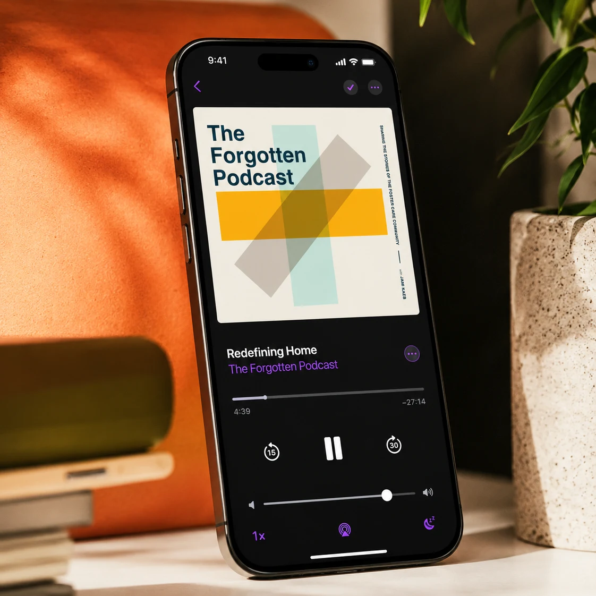
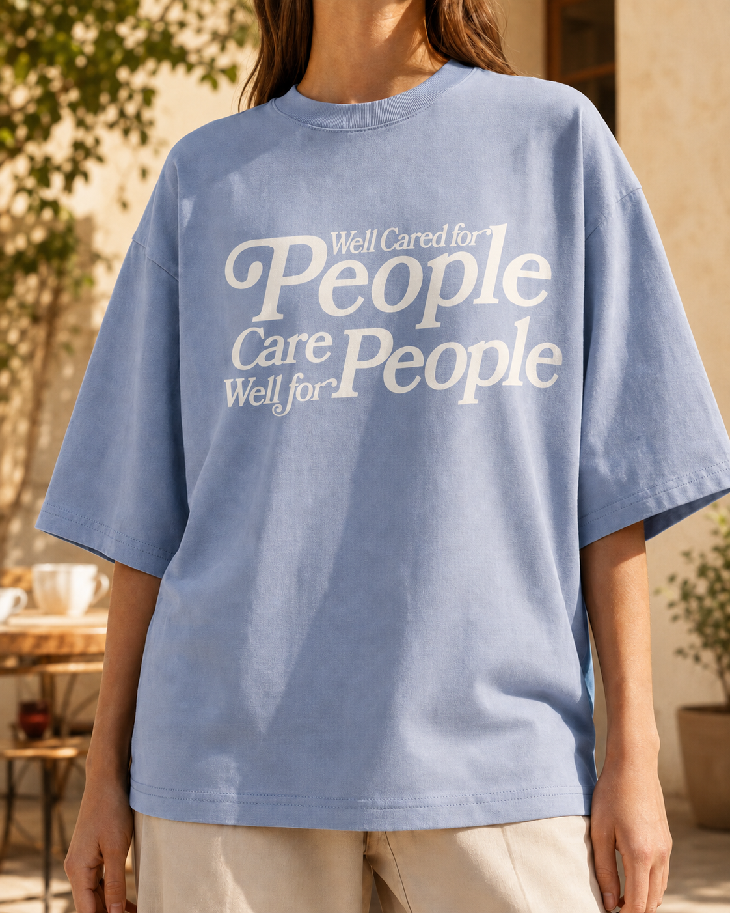
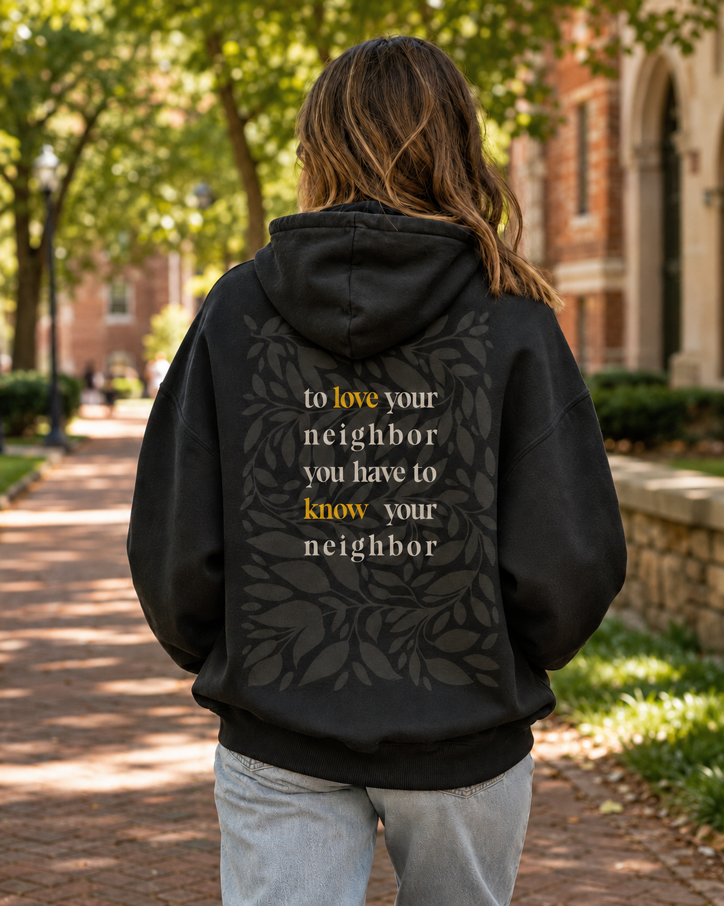
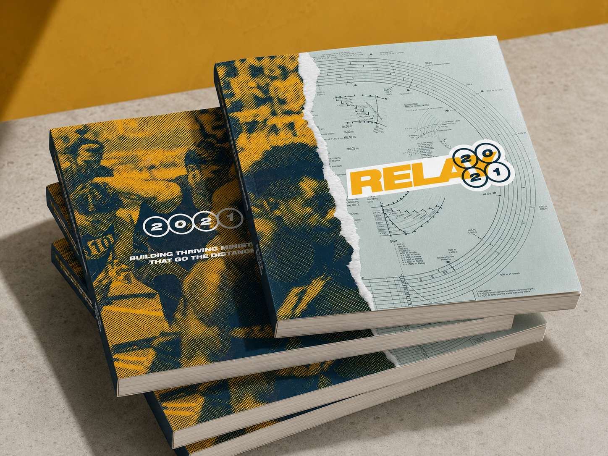
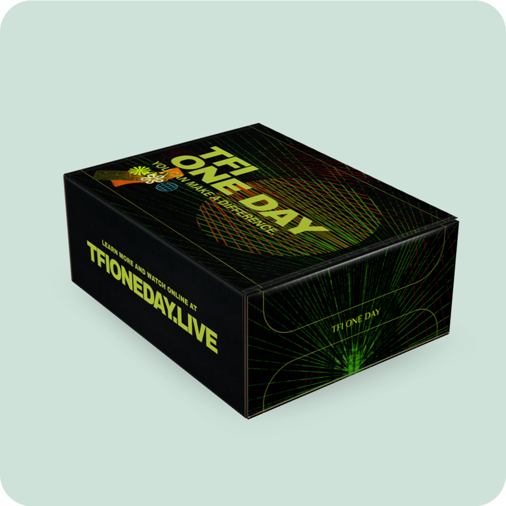

The Forgotten Initiative
Turning awareness into a meaningful next step.
The Forgotten Initiative helps churches support the foster care community. I joined as a Creative Content Producer and grew into the Communications Director role, leading strategy while staying close to the work across podcasts, video, campaigns, fundraising, email, social, and the web.
TFI was growing. The opportunity was to build a stronger communications system around a complex, emotionally sensitive mission, helping people feel seen, understand their part, and know how to respond.

Total downloads during my tenure
Built content people could return to.
I recorded and edited episodes, created promotional assets, supported distribution, and helped launch podcast brands and content pathways. The work included The Forgotten Podcast, Just Neighbors, and the material that kept an episode useful beyond its publish date.
The Forgotten Podcast surpassed one million total downloads during my tenure, the strongest verified audience signal from this body of work.
The voice carried off the screen too.
Apparel, the annual Relay booklet, and the TFI One Day box put the same message in people's hands.



